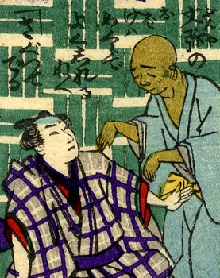

幽霊；ユウレイ，盲目；モウモク

盲人である文弥の幽霊。坊主頭で肌の色が悪く、両腕を前へ垂らしている。水色の着物を身につけている。詞書には「文弥のお化けはめくらでよく知れるねぇ。探って出る」とある。
著作者：芳幾近二／出典：親書誌：U426_nichibunken_0229：新作おばけ野噺；シンサクオバケノバナシ／日付：2010／資源識別子：U426_nichibunken_0229_0014_0000
Copyright (c)2010- International Research Center for Japanese Studies, Kyoto, Japan. All rights reserved.